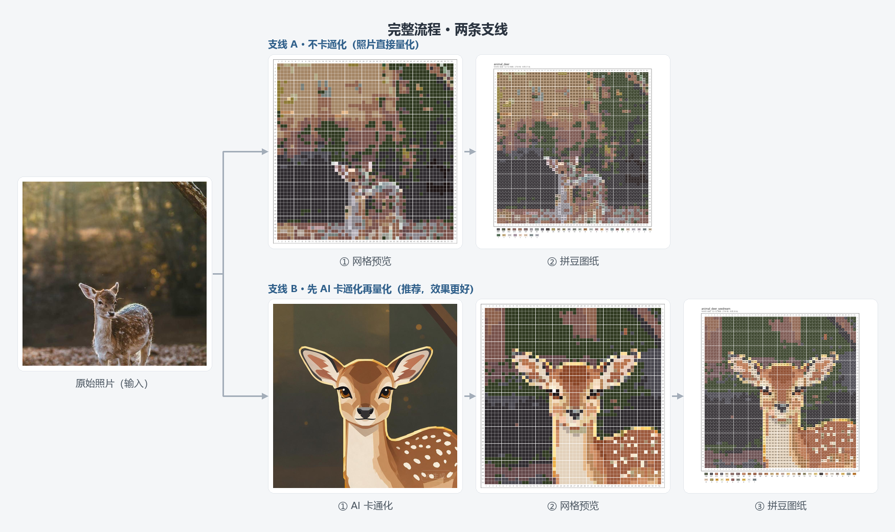
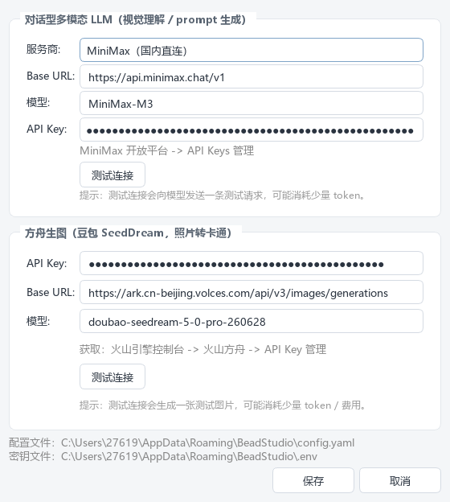
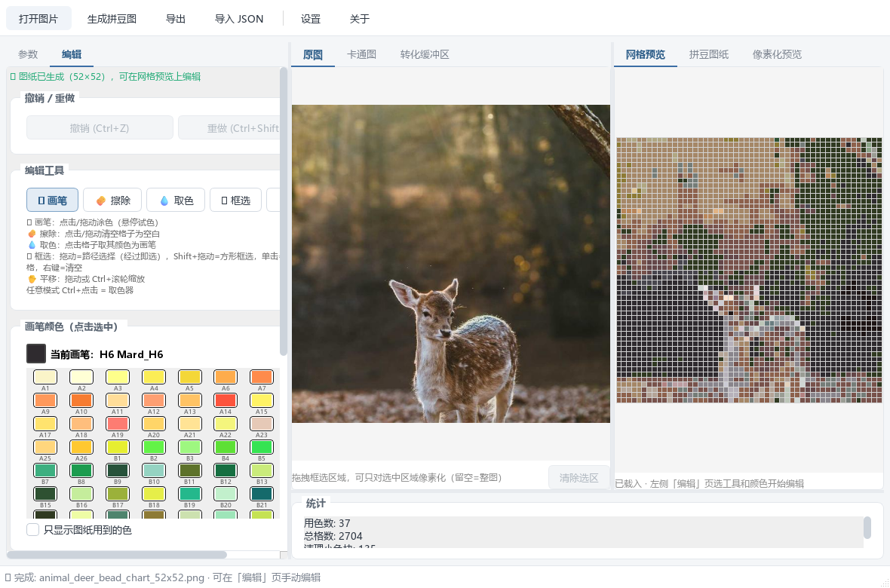

把照片 / 卡通图一键转换成可实际拼搭的 MARD 色板拼豆图纸。支持 AI 卡通化、手动编辑、参数调优与多种导出。
💡 本项目原名 Bead Studio，因同名项目过多改名为 Beadobe。所有名称、代码与可执行文件均已统一为 Beadobe。

Beadobe 文件夹（内含 Beadobe.exe 与 _internal）。Beadobe.exe 即可启动，无需安装 Python。%APPDATA%\Beadobe），不影响使用。# 1. 安装 Python 3.10+ 后安装依赖
pip install numpy pillow opencv-python PySide6 pyyaml requests
# 2. （可选，AI 卡通化需要）
pip install openai
# 3. 在项目目录启动
python beadobe.py点击左上角「打开图片」，或直接把图片拖进窗口。支持 JPG / PNG 等常见格式。
这里是一个岔路口，决定走哪条支线（见顶部流程图）：
点左侧底部蓝色「生成拼豆图纸」按钮（或 Ctrl+R）。几秒后右侧会同时出现：
切到左侧「编辑」页，用画笔 / 擦除 / 框选工具修整细节（见 第 4 节）。算法不是完美的——尤其是眼睛、胡须这类 1–2 格的关键细节，手动点几下往往效果最好。
点「导出」（Ctrl+S），勾选需要的产物：
| 产物 | 用途 |
|---|---|
| 拼豆图纸 PNG | 打印出来，按色号逐格拼搭 |
| 网格预览 PNG | 屏幕对照，色块更直观 |
| 像素化预览 PNG | 分享 / 预览成品效果 |
| JSON 色号矩阵 | 二次开发（统计用豆量、生成加工文件） |
导出前可自定义文件名基名与输出目录。
卡通化分两步自动完成：对话型 LLM 理解图片关键特征（眼睛、耳朵、花纹位置）→ 豆包 SeedDream 图生图转成干净色块的卡通风格。关键特征坐标会传给量化器，让眼睛、鼻线等细节在低网格下也能保留。

.env 文件，不会上传）。同一张鹿照片，两条支线在 52×52 网格下的差异（对应顶部流程图）：
「卡通化」分组里可填写自定义 Prompt 直接指定风格（例：「清新可爱的卡通猫，白色短毛，半眯眼，干净色块」），填了就跳过 LLM 自动描述。

| 工具 | 操作 |
|---|---|
| 🖌 画笔 | 点击 / 拖动涂色；在色板上悬停可实时预览改色效果，点击确认 |
| 🧽 擦除 | 点击 / 拖动把格子清空为空白 |
| 💧 取色 | 点击任意格子，把它颜色设为画笔色 |
| ⬚ 框选 | 拖动 = 路径选择；Shift+拖动 = 方形框选；单击 = 反选单格；右键 = 清空选择 |
| ✋ 平移 | 拖动平移画布；Ctrl+滚轮缩放 |
在「原图」/「卡通图」Tab 上直接拖拽即可框选区域（可拖边角微调），只对选中区域做量化——适合照片主体小、想放大细节的场景。选区会显示在「转化缓冲区」Tab。
默认参数（pixeloe + nearest）适合大多数图片。以下是最值得调的几项：
| 参数 | 默认 | 怎么调 |
|---|---|---|
| Grid size | 52 | 16–104。越大细节越多，但豆板数量与工作量也增加。16/32 适合做挂件小图，52 对应一整块标准板，104 适合大幅作品 |
| 像素化方法 | pixeloe | pixeloe：轮廓干净、色块分明（推荐照片/卡通）；area：直接平均，最朴素；dpid：保留更多纹理；SuperSample：超采样+投票，可抢救细线条 |
| POE mode | nearest | center/contrast 增强对比；bicubic 更平滑；nearest 边缘锐利 |
| thickness | 3 | PixelOE 轮廓描边粗细，0 = 关闭。线条发虚可加到 4–5，太重可减 |
| 超采样（仅 SuperSample） | 4 / vote | 策略 darkest 保留深色描边（适合线稿），line_aware 配合线条检测抢救胡须等细线 |
| Min island size | 2 | 小于该面积的孤立色块会被清理；调大画面更干净，调小保留更多细节 |
| Cleanup ΔE | 20 | 清理时的色差阈值：与周围差异大于它的孤立块视为关键特征保留（如黑色瞳孔） |
| 快捷键 | 功能 |
|---|---|
| Ctrl+O | 打开图片 |
| Ctrl+R | 生成拼豆图纸 |
| Ctrl+S | 导出 |
| Ctrl+I | 导入 JSON |
| Ctrl+Z / Ctrl+Shift+Z | 撤销 / 重做 |
| Ctrl+A | 全选格子 |
| Ctrl+滚轮 | 缩放画布（任意工具下） |
| Ctrl+点击 | 任意模式下临时取色 |
「生成」需要先打开图片；「卡通化」需要先配置 API Key 并联网。看底部状态栏提示即可定位。
三招依次尝试：① 提高 Grid size；② 像素化方法换 SuperSample + 线条检测（方法选 canny）；③ 切到编辑页手动画上去——往往最快。
所有色号来自 MARD 221 色色板（palettes/mard.csv），按色号采购即可。若某色缺货，可用批量改色换成近似色（编辑页「改为」）。
先检查 Key 与网络；方舟接口偶尔限流，重试即可。测试连接本身会发真实请求并消耗少量 token。
把新色板做成 code,name,hex 格式的 CSV 替换 palettes/mard.csv（或改代码指向新文件）即可，量化器自动适配任意色数。